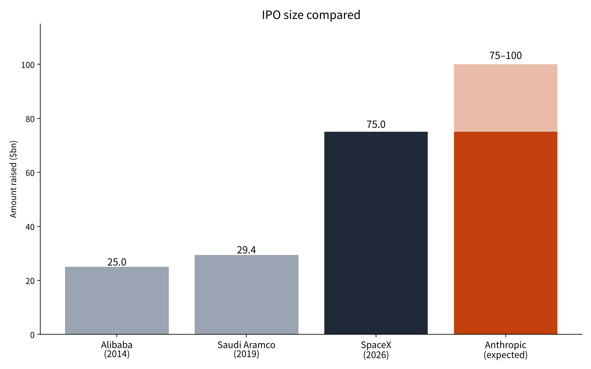
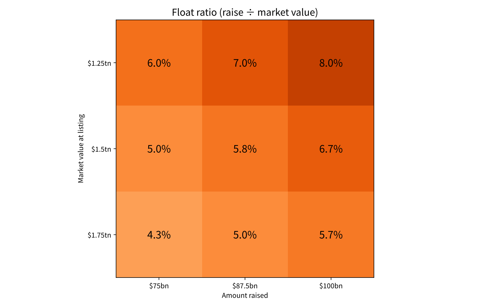

Is Anthropic's $75–100 Billion Raise the Largest Ever? What Past Mega-IPOs Tell Us About Size and Listing Day
On October 26, Anthropic publicly filed its registration statement (Form S-1) with the U.S. Securities and Exchange Commission[1]. Reports say the roadshow could start as early as November 10 (U.S. time), with an expected raise of $75–100 billion[9].
In June, SpaceX raised $75 billion in what became the largest IPO in history[6]. Just five months later, an offering of the same scale is coming again.
The question of this article: how large is Anthropic's raise compared with past mega-IPOs, and what can we learn from what happened on listing day and afterward?
- Anthropic's raise ($75–100 billion) would match SpaceX's $75 billion or beat it by more than 30%, 2.6–3.4 times Aramco and 3.0–4.0 times Alibaba.
- Its float ratio would be small at 4.3–8.0%, and a PSR of 63–89x prices in revenue several times today's.
- Historically, $1 billion-plus IPOs rose 17.9% on day one on average, but 2012–2024 IPOs trailed the market by 25.5% over three years.

Question and background
An IPO (initial public offering) is when a private company sells its shares on the market for the first time to raise capital. The amount raised equals the number of shares sold times the offer price. The underwriters' right to sell extra shares is called the "greenshoe"; when exercised, it lifts the raise by a little over 10%.
A roadshow is the period before listing when the company and its banks visit institutional investors to collect how many shares they want and at what price. The offer price is set from that demand. For Anthropic, the roadshow is expected to last about a week[5].
The bigger the raise, the more buyers and capital it needs. If demand falls short on listing day, the price drops below the offer price. If demand is too strong, the stock jumps on day one and the company has sold too cheaply. This "first-day pop" has long been studied in academic research[2].
Looking at past records, Alibaba raised $25.0 billion in 2014 and Saudi Aramco $29.4 billion in 2019, both including the greenshoe[3][4][7]. In June 2026, SpaceX sold 555.56 million shares at $135 each and raised $75 billion[6][12].
This article also uses a second yardstick, the "float ratio": the amount raised divided by market value at listing. It shows what share of the whole company newly reaches the market. The smaller the float ratio, the fewer shares are sold relative to the size of the company.
We also use the PSR (price-to-sales ratio): market value divided by annual revenue, showing how many years of sales the price reflects. Because it works even for loss-making companies, it is widely used to compare how growth companies are valued.
Data and method
We use each company's registration statements and prospectuses (SEC), company announcements, and academic IPO statistics[1][2][3][4]. Anthropic's raise is not fixed at the filing stage, so we assume the reported range of $75–100 billion[5][9].
Market value is not fixed either. Reports range from $1.2 trillion to $2 trillion[10][11]. We use three cases: $1.25 trillion, $1.5 trillion and $1.75 trillion.
Anthropic's revenue was $19.7 billion for the 12 months to June 2026[5]. We combine this with the three market values to calculate the PSR.
The method has four steps. First, compare the raise with past mega-IPOs. Second, calculate the float ratio for combinations of raise and market value. Third, calculate the PSR under the three market values. Fourth, check first-day gains and three-year performance using the IPO statistics compiled by Professor Jay Ritter of the University of Florida[2].
Results

By amount raised, Anthropic would match SpaceX even at $75 billion, and exceed it by more than 30% at $100 billion. That is 2.6–3.4 times Aramco's $29.4 billion and 3.0–4.0 times Alibaba's $25.0 billion.
| Deal | Year | Raised ($bn) | Market value at listing ($bn) | Float ratio |
|---|---|---|---|---|
| Alibaba | 2014 | 25.0 | 168 | 14.9% |
| Saudi Aramco | 2019 | 29.4 | 1,700 | 1.7% |
| SpaceX | 2026 | 75.0 | 1,800 | 4.2% |
| Anthropic (middle case) | 2026 | 87.5 | 1,500 | 5.8% |
The float ratio was 14.9% for Alibaba, against 1.7% for Aramco and 4.2% for SpaceX. The two recent giants sold only a small slice of the company. Anthropic's middle case stays at 5.8%.
On listing-day moves, Professor Ritter's statistics show an average first-day return of 19.0% (equal-weighted) and 7.0% (proceeds-weighted) for U.S. IPOs from 1980 to 2025[2]. For deals of $1 billion or more in 2001–2025, the average was 17.9%[2]. SpaceX rose 19% on its first day[8].
Performance after listing tells a different story. Operating-company IPOs from 2012 to 2024 returned 7.6% over three years buy-and-hold, but trailed the market by 25.5%[2]. Even when they rose on day one, they often lost to the market over the next three years.
The PSR is 76.1x under the $1.5 trillion case, meaning the price reflects 76 years of current sales. It is 63.5x at $1.25 trillion and 88.8x at $1.75 trillion. Under every case, the price assumes revenue grows several times over.
Sensitivity analysis

We calculated the float ratio for three raises and three market values. The smallest is 4.3% ($1.75 trillion value, $75 billion raise) and the largest is 8.0% ($1.25 trillion, $100 billion). All nine cases fall below Alibaba's 14.9% and above Aramco's 1.7%.
| Market value / Raise | $75bn | $87.5bn | $100bn |
|---|---|---|---|
| $1.25 trillion | 6.0% | 7.0% | 8.0% |
| $1.5 trillion | 5.0% | 5.8% | 6.7% |
| $1.75 trillion | 4.3% | 5.0% | 5.7% |
Next, we set three cases for the first-day gain. At 0%, buyers get no day-one gain. At the proceeds-weighted average of 7.0%, an $87.5 billion deal would hand buyers about $6.1 billion; at the 17.9% average for $1 billion-plus deals, about $15.7 billion. Depending on the pop, the money moving on day one differs by more than two times.
In the same way, we can ask how much revenue must grow for the PSR to fall to the level of today's large tech stocks. To bring the PSR down to 30x at a $1.5 trillion value, revenue would need to reach $50 billion, about 2.5 times today's $19.7 billion.

Discussion
The results suggest Anthropic's IPO will be among the largest ever in dollars, but the share of the company it sells is small relative to its size. The smaller the float ratio, the fewer shares reach the market, and the more the price moves on the balance of supply and demand.
A small float ratio can also support the price after listing. With fewer shares for sale, the price is less likely to collapse while buyers remain eager. SpaceX's 19% first-day gain is probably not unrelated to its small 4.2% float.
There is an opposing view. A raise this large means buyers cannot rely on cash alone and will sell other stocks to fund it. That selling could weigh on other large-cap stocks around the listing. Our data cannot test this. Checking daily moves of other large caps around the SpaceX listing would go some way toward an answer, and we leave it as a next task.
The data also has clear limits. We compared only three deals, from different countries and eras. Aramco relied mainly on domestic investors, and the state kept most of the company. SpaceX's post-IPO record covers only five months. Professor Ritter's statistics are mostly U.S. deals and include almost no offerings as large as these three. The revenue used for the PSR will already be half a year old at listing.
We can set three benchmarks to check the answer: whether market value at pricing exceeds $1.5 trillion, whether the float ratio falls below 5%, and whether the first-day gain exceeds 17.9%.
Conclusion
At $75 billion, Anthropic's raise would match SpaceX; at $100 billion it would beat the record by more than 30%. Yet its float ratio would be small at 4.3–8.0%, making it another "sell only a slice" mega-IPO like Aramco and SpaceX. Its valuation is high at a PSR of 63–89x, pricing in revenue several times today's. Historically, large deals also rose 17.9% on average on day one, but often lagged the market over the following three years.
How I see it
I have decided to buy Anthropic shares once it lists. I have not yet decided whether to buy on listing day or later. These numbers suggest it is better to think in terms of holding for the years after listing rather than the excitement of day one.
What I keep thinking about is where all this money will come from. Besides large investors, some will buy with borrowed money, and some will sell other stocks to build a position. SpaceX, which I hold, was at $134.27 as of November 6, against its $135 offer price. A stock that rose 19% on listing day is back near its offer price after five months. I will keep that record in mind as I wait for listing day.
Sources
- Anthropic, PBC, "Form S-1 Registration Statement", 2026-10-26 https://www.sec.gov/Archives/edgar/data/0002130357/000162828026067168/anthropicpbc-sx1.htm
- Jay R. Ritter (University of Florida), "Initial Public Offerings: Updated Statistics", 2026-11-05 https://site.warrington.ufl.edu/ritter/files/IPO-Statistics.pdf
- Alibaba Group Holding Ltd, "Form 424B4 Prospectus", 2014-09-19 https://www.sec.gov/Archives/edgar/data/0001577552/000119312514347620/d709111d424b4.htm
- Alibaba Group, "Alibaba Group Announces Exercise of Underwriters' Option to Purchase Additional ADSs", 2014 https://www.alibabagroup.com/en-US/document-1490842489823690752
- Renaissance Capital, "AI model developer Anthropic PBC files for an estimated $75 billion IPO", 2026-10-26 https://www.renaissancecapital.com/IPO-Center/News/122417/ai-model-developer-anthropic-pbc-files-for-an-estimated-75-billion-ipo
- IPO Scoop, "SpaceX (SPCX) Raises $75 Billion in Biggest IPO in History", 2026-06-11 https://www.iposcoop.com/?p=38637
- Gulf News, "Aramco raises IPO to record $29.4 bln through greenshoe option", 2020-01-12 https://gulfnews.com/business/aramco-raises-ipo-to-record-294-bln-through-greenshoe-option-1.68959262
- NPR, "SpaceX IPO makes history as largest ever. Stock gains 19% on first day", 2026-06-12 https://npr.org/2026/06/12/nx-s1-5855004/stock-ai-spacex-ipo-elon-musk
- TradingKey, "US stock market: Nasdaq, Dow rise; Anthropic IPO", 2026-11-09 https://tradingkey.com/analysis/stocks/us-stocks/262297090-us-stock-nasdaq-dow-rise-anthropic-ipo-nvidia-spacex-tesla-tradingkey
- Let's Data Science, "Anthropic reportedly presses ahead with IPO targeting $1.5 trillion valuation", 2026 https://letsdatascience.com/news/anthropic-reportedly-presses-ahead-with-ipo-targeting-15-tri-c74a48fb
- FourWeekMBA, "Investors Discuss $1.2T-$1.3T Anthropic IPO Value After Rout", 2026 https://fourweekmba.com/ai-investors-discuss-1-2t-1-3t-anthropic-ipo-value-after-rout/
- Space Exploration Technologies Corp., "Form S-1/A (Amendment No. 2)", 2026 https://sec.gov/Archives/edgar/data/1181412/000162828026040364/spaceexplorationtechnologib.htm
Photos: David Vives / Maxim Hopman (Unsplash). Charts by YUKI CAPITAL
I record my daily numbers and decisions on X.